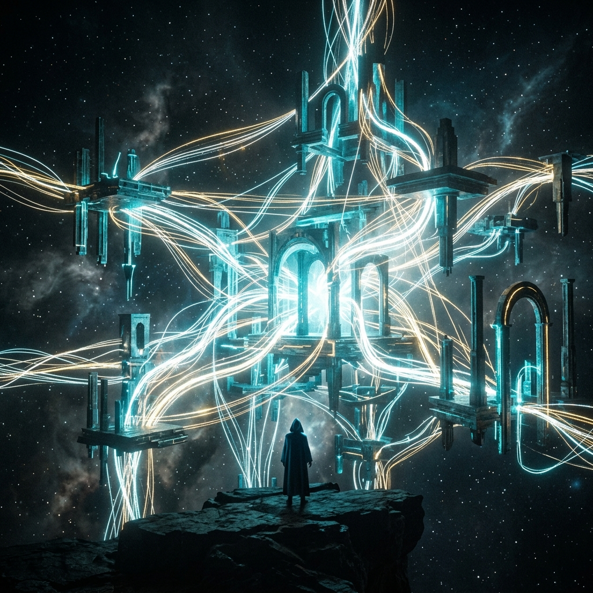

The Architecture of Who You Are
MEMORY &
IDENTITY
The Invisible Warfare
Who you are is directly connected to what you remember. When you forget who you are, you become whoever the environment tells you to be. The attack on memory is a deliberate, strategic component of the enemy's agenda.
🧠 The Three Levels of Memory
"A person who remembers what God has done carries a weapon of testimony that no darkness can argue against."
Memory operates spiritually, psychologically, and socially. Prophetic words are not decorative—they are legal determinations about your future. A memory never given expression eventually fades.
The enemy targets memory so that you forget who you are, what God said about you, and the moments that defined you.
THE ILLUSION OF HUMILITY
When a person consistently puts themselves down, deflecting every grace, the church calls it humility. It is actually fraud. To look at what God made with contempt is a disagreement with God's workmanship.
🗺 The Architecture of Identity
Click or tap any node to reveal the deep insight behind it.
THE FORCES OF FORGETTING
SUSTAINED DOMINION PROTOCOLS
🧩 The Joseph Principle
IDENTITY SURVIVES ITS ENVIRONMENT
The most powerful test is whether you know who you are when everything goes wrong. Joseph was enslaved, falsely accused, and imprisoned. The environment broadcasted a specific identity: slave, criminal.
Joseph refused the label. He was a man of prophecy who happened to be in a prison. He was not a prisoner who happened to have once had a dream. That distinction is everything.
THE ANOINTING VS CHARACTER
The Cracked Container
The anointing without character is a disaster in slow motion. The anointing is the oil; character is the container. A cracked container doesn't lose oil in one dramatic moment—it loses it gradually, drip by drip, until the inside is quietly empty. Influence requires trust built when no one was watching.
📡 The Subconscious Architect Lab
Evaluate the five builders that constructed your lens of reality without your conscious awareness.
Select an Architect
Explore what has been actively building your baseline reality.
🔓 The Character Formation Pipeline
Character is not given in an encounter. It follows a specific, progressive pipeline. Check to acknowledge the sequence.
1. Beliefs to Convictions
As a man thinks in his heart, so is he. It begins organically.
2. Convictions to Values
What governs your decisions when there is pressure applied.
3. Conduct to Ethics
How you behave consistently when the feeling has left and only structure remains.
4. Character (The Container)
The settled pattern of an individual's behavior. The wall of the city.
🪞 The Functional Identity
Purpose is not a mystery to resolve.
It is a signature to be read from the inside.
Pay attention to what consistently breaks your heart, what energizes you, what you would pursue even if no one was watching. That is the fingerprint of function.
You are seated in heavenly places. You are above the rank of principalities. Act like it.
🔥 The Closing Declaration
THE ARCHITECTURAL OATH
"I will not define myself by the label of my most recent difficult season. I embrace my positional identity. I will build character to house my assignment, protect my memory, and operate with sharpened spiritual senses."